Root Locus
System Modeling and Control · Chapter 12
Contents
Root Locus and the Angle Condition
Root Locus Construction Rules
Asymptotes, Breakaway Points, and Departure Angles
Effects of Open-Loop Poles and Zeros
Satellite Control Design Example
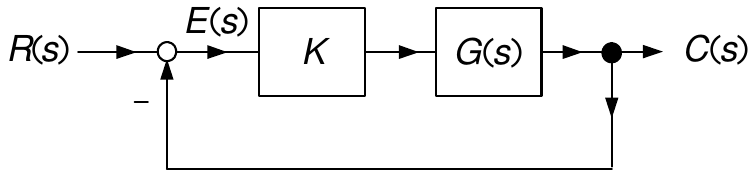
Let \(G(s)\) be given by \[G(s)=\frac{b(s)}{a(s)}=\frac{b_{m}s^{m}+b_{m-1}s^{m-1}+\cdots+b_{1}s+b_{0}}{s^{n}+a_{n-1}s^{n-1}+\cdots+a_{1}s+a_{0}},\text{ }m<n\] The closed-loop transfer function is \[\frac{C(s)}{R(s)}=\frac{KG(s)}{1+KG(s)}=\frac{Kb(s)\!/\!a(s)}{1+Kb(s)\!/\!a(s)}=\frac{Kb(s)}{a(s)+Kb(s)}.\]
As \(K\) is varied from \(0\) to \(\infty\) we want to know the location of the roots of \[a(s)+Kb(s)=0.\]
\(a(s)+Kb(s)\) is the closed-loop characteristic polynomial.
The roots of \(a(s)+Kb(s)=0\) are the closed-loop poles.
The root locus is a plot of the roots of \(a(s)+Kb(s)=0\) as \(K\) goes from \(0\) to \(\infty.\)
With \(G(s)=\dfrac{1}{s(s+4)}\) we have \[\frac{C(s)}{R(s)}=\frac{KG(s)}{1+KG(s)}=\frac{K\dfrac{1}{s(s+4)}}{1+K\dfrac {1}{s(s+4)}}=\frac{K}{s^{2}+4s+K}.\]
For \(K\geq0\) compute the roots of \[s^{2}+4s+K=0.\]
By the quadratic formula\[s=\dfrac{-4\pm\sqrt{16-4K}}{2}=-2\pm\sqrt{4-K}\] or \[p_{1},p_{2}=\left\{ \begin{array}{ll} -2+\sqrt{4-K},\text{ }-2-\sqrt{4-K}, & 0\leq K\leq4 \\ & \\ -2\pm j\sqrt{K-4}, & 4\leq K.\end{array} \right.\]
From previous slide: \[p_{1},p_{2}=\left\{ \begin{array}{ll} -2+\sqrt{4-K},\text{ }-2-\sqrt{4-K}, & 0\leq K\leq4 \\ & \\ -2\pm j\sqrt{K-4}, & 4\leq K.\end{array} \right.\]
For \(K=0,2,4,8\) we have\[\begin{array}{|c|c|} \hline K & p_{1},p_{2} \\ \hline 0 & 0,-4 \\ \hline 2 & -2+\sqrt{2},-2-\sqrt{2} \\ \hline 4 & -2,-2 \\ \hline 8 & -2\pm j2 \\ \hline \end{array}\]
Sketch the root locus.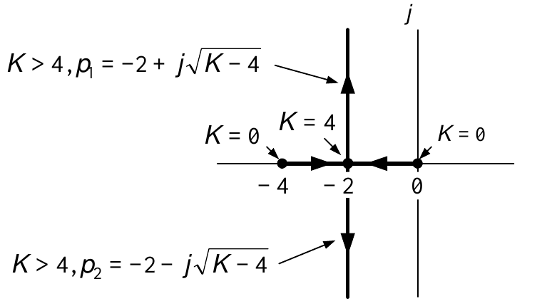
Sketch the root locus without having to solve for all the roots.
A computer can be used to numerically find the roots.
By sketching the root locus we gain insight into the information it contains.
Sketching the root locus is based on the angle condition.
Define the return difference by \[1+KG(s)=1+K\dfrac{b(s)}{a(s)}=\dfrac{a(s)+Kb(s)}{a(s)}.\]
The zeros of the return difference are the roots of \(a(s)+Kb(s)=0.\)
These are the closed-loop poles.
The poles of the return difference are the roots of \(a(s)=0.\)
These are open-loop poles.
The root locus is a plot of the zeros of \(1+KG(s)=0\) for \(K\geq0.\)
If \(s_{0}\) satisfies \[1+KG(s_{0})=0\] for some \(K>0\) then it satisfies \[G(s_{0})=-\frac{1}{K}.\]
From previous slide: If \(s_{0}\) satisfies \[1+KG(s_{0})=1+K\dfrac{b(s_{0})}{a(s_{0})}=\dfrac{a(s_{0})+Kb(s_{0})}{a(s_{0})}=0\]
for some \(K>0\) then it satisfies \[G(s_{0})=-\frac{1}{K}.\]
In general, \(s_{0}\) is a complex number.
For \(s_{0}\) to be on the root locus, \(G(s_{0})\) equal to a negative real number.
That is, in polar coordinates, \(s_{0}\) must satisfy \[|G(s_{0})|e^{j\angle G(s_{0})}=-\frac{1}{K}=\frac{1}{K}e^{j\pi}.\]
Thus for \(s_{0}\) to be on the root locus, \(G(s_{0})\) satisfies the angle condition given by \[\angle G(s_{0})=\pi(2\ell+1),\ell=0,\pm1,\pm2,...\]
The corresponding value of \(K\) is given by \[K=\frac{1}{|G(s_{0})|}.\]
Only need the open-loop transfer function \(G(s)\) to see if \(s_{0}\) is a closed-loop pole.
\[\begin{aligned} G(s) & =\dfrac{1}{s(s+4)}=\dfrac{1}{\underset{s}{\underbrace{|s|e^{j\angle s}}}\text{ }\underset{s+4}{\underbrace{|s+4|e^{j\angle(s+4)}}}}=\dfrac {1}{|s||s+4|}e^{-j\angle s}e^{-j\angle(s+4)} \\ & \\ \Longrightarrow\text{ }\angle G(s) & =-\angle s-\angle(s+4). \end{aligned}\]
Let the point “\(s\)” be on the root locus.
\(s+4=s-(-4)\) is a vector from \(-4\) to \(s.\)
\(s\) is a vector from \(0\) to \(s.\)
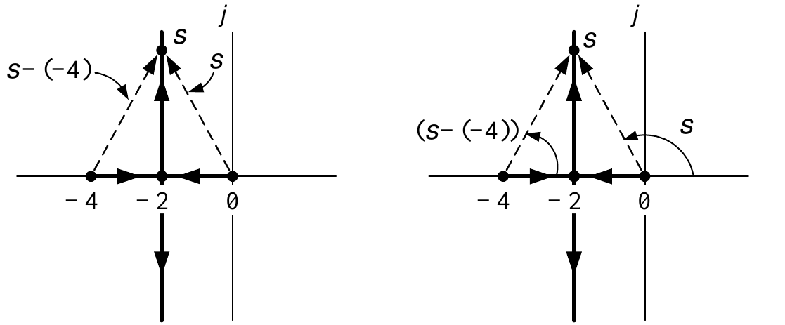
The figure shows \(\angle s+\angle(s+4)=\pi,\) i.e., \[\angle G(s)=-\angle s-\angle(s+4)=-\pi.\]

For example, \(s=-2+2j\) is on the root locus and \[\begin{aligned} G(-2+2j) & =\dfrac{1}{(-2+j2)(-2+2j+4)}=\frac{1}{(-2+2j)(2+2j)}=-\frac{1}{8} \\ & \\ \Longrightarrow\angle G(-2+2j) & =\angle(-1/8)=\pi. \end{aligned}\]
On the other hand \(s=-4+2j\) is not on the root locus and \[\begin{aligned} G(-4+2j) & =\dfrac{1}{(-4+j2)(-4+2j+4)}=\frac{1}{(-4+2j)(2j)}=-\frac {1}{4+8j} \\ & \\ \Longrightarrow\angle G(-4+2j) & \neq\pi(2\ell+1),\text{ }\ell=0,\pm 1,\pm2,..... \end{aligned}\]
Let \(s=-1\) which is on on the root locus with \[\angle s=\pi \text{and }\angle(s-(-1))=0.\]
Thus \[\angle G(s)=-\angle s-\angle(s+4)=-\pi\] so that \(s=-1\) satisfies the angle condition.
On the other hand, let \(s=-5\), so \[\angle s=\pi \quad \text{and} \quad \angle(s-(-5))=\pi.\]
Thus \[\angle G(s)=-\angle s-\angle(s-(-5))=-2\pi\] showing \(s=-5\) does not satisfy the angle condition.
The return difference is \[1+KG(s)=1+K\dfrac{b(s)}{a(s)}=\dfrac{a(s)+Kb(s)}{a(s)}=\frac{s(s+4)+K}{s(s+4)}.\]
Its zeros are the closed-loop poles.
(1) The root locus starts on the open-loop poles.
I.e., for \(K=0\) the closed-loop poles are the roots of \[a(s)+Kb(s)=a(s)=s(s+4)=0.\]
(2) The number of branches of the root locus is 2.
This is because \(a(s)+Kb(s)=s^{2}+4s+K=0\) has two roots.
(3) The root locus is symmetric with respect to the real axis.
This is simply because the complex roots of \[a(s)+Kb(s)=s^{2}+4s+K=0\]
come in complex conjugate pairs.
(4) For any \(s_{0}\) on the root locus, \[\angle G(s_{0})=\angle\dfrac{1}{s_{0}(s_{0}+4)}=\pi(2\ell+1),\ell=0,\pm 1,\pm2,....\]
(5) A breakaway point occurs at \(s=-2\) for \(K=4.\)
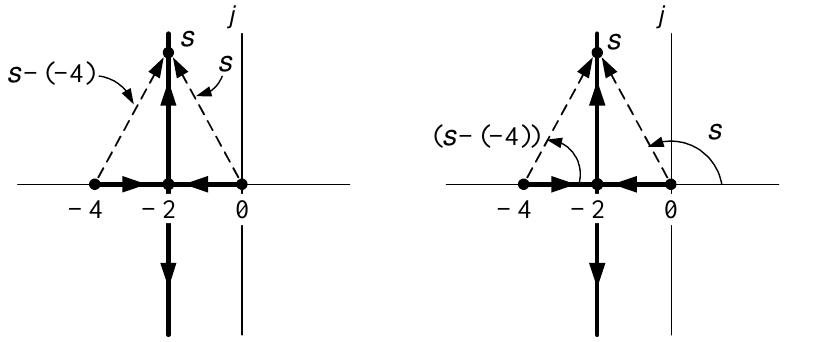
This is where \(a(s)+Kb(s)=s^{2}+4s+K=0\) has a double root, that is, \[\left. 1+K\frac{1}{s(s+4)}\right\vert _{K=4}=\left. \dfrac{s^{2}+4s+K}{s(s+4)}\right\vert _{K=4}=\dfrac{(s+2)^{2}}{s(s+4)}\]
\[\begin{aligned} \!\!\!\!\!\!\!\left. \frac{d}{ds}\left( 1+4\frac{1}{s(s+4)}\right) \right\vert _{s=-2}\!\!\!\!\!\!\! & =\!\!\!\!\left. \frac{d}{ds}\left( \dfrac{(s+2)^{2}}{s(s+4)}\right) \right\vert _{s=-2} \\ \!\!\!\!\!\!\! & =\!\!\!\!\left. -\dfrac{1}{s(s+4)}\left( \dfrac{d}{ds}(s^{2}+4s)\right) (s+2)^{2}\right\vert _{s=-2}\!\!\!\!+\left. \left( \dfrac{1}{s(s+4)}\dfrac{d}{ds}(s+2)^{2}\right) \right\vert _{s=-2} \\ \!\!\!\!\!\!\! & =\!\!\!\!0. \end{aligned}\]

\(G(s)=\dfrac{1}{s(s+2)(s+4)}=\dfrac{1}{|s||s+2||s+4|}e^{-j\left( \angle s+\angle(s+2)+\angle(s+4)\right) }.\)
\(1+KG(s)=1+K\dfrac{1}{s(s+2)(s+4)}=\dfrac{s(s+2)(s+4)+K}{s(s+2)(s+4)}=0.\)
\(G(s)=-\dfrac{1}{K}\Longrightarrow\angle G(s)=\pi(2\ell+1),\ell =0,\pm1,\pm2,....\)
Sketch the root locus.
(1) With \(K=0\) we have \(s(s+2)(s+4)+K=s(s+2)(s+4)=0\) or \(s=0,-2,-4.\)
- The root locus starts on the open-loop poles.
(2) \(1+KG(s)=0\) or \(G(s)=\dfrac{1}{s(s+2)(s+4)}=-\dfrac{1}{K}.\)
- As \(K\rightarrow\infty,\) the 3 roots go to infinity, i.e., \(|s|\rightarrow\infty.\)
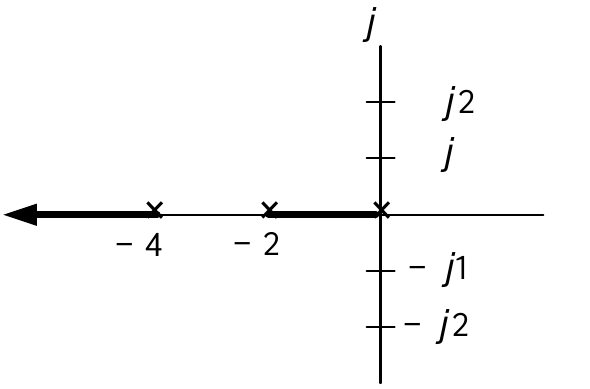
(i) Consider \(s\) real with \(-2<s<0\) so \(\angle s=\pi,\angle (s+2)=0,\angle(s+4)=0.\)
Then \[\angle G(s)=-\angle s-\angle(s+2)-\angle(s+4)=-\pi.\]
These values of \(s\) are on the root locus.
(ii) Consider \(s\) real with \(-4<s<-2\) so \(\angle s=\pi,\angle (s+2)=\pi,\angle(s+4)=0.\)
Then \[\angle G(s)=-\angle s-\angle(s+2)-\angle(s+4)=-2\pi.\]
These values of \(s\) are not on the root locus.
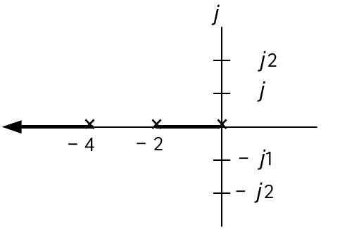
(iii) Consider \(s\) real with \(s<-4\) so \(\angle s=\pi,\angle (s+2)=\pi,\angle(s+4)=\pi.\)
Then \[\angle G(s)=-\angle s-\angle(s+2)-\angle(s+4)=-3\pi.\]
These values of \(s\) are on the root locus.
(iv) Finally, consider \(s\) real with \(s>0\) so \(\angle s=0,\angle (s+2)=0,\angle(s+4)=0.\)
Then \[\angle G(s)=-\angle s-\angle(s+2)-\angle(s+4)=0.\]
These values of \(s\) are not on the root locus.
(4) Breakaway Point
A breakaway point occurs at a value of \(K\) for which \[1+K\dfrac{1}{s(s+2)(s+4)}=\dfrac{s(s+2)(s+4)+K}{s(s+2)(s+4)}=0\] has multiple zeros.
That is, \(s_{b}\) is a breakaway point for a value of \(K_{b}\) such that \[1+K_{b}\dfrac{1}{s(s+2)(s+4)}=\dfrac{s(s+2)(s+4)+K_{b}}{s(s+2)(s+4)}=\frac{(s-s_{b})^{2}(s-s_{1})}{s(s+2)(s+4)}.\]
Two branches breaking away from the real axis come together as a double root.
They then leave the real axis as a complex conjugate pair.
Thus at a breakaway point we have \[\frac{d}{ds}\underset{\frac{(s-s_{b})^{2}(s-s_{1})}{s(s+2)(s+4)}}{\underbrace{\left( \right. 1+K_{b}\dfrac{1}{s(s+2)(s+4)}\left. \right) }}\left. \right\vert _{s=s_{b}}=K_{b}\dfrac{d}{ds}\underset{G(s)}{\underbrace{\left( \dfrac{1}{s(s+2)(s+4)}\right) }}=0.\] Summarizing, a breakaway point \(s_{b}\) must be a solution to \(\left. \dfrac{d}{ds}G(s)\right\vert _{s=s_{b}}=0.\)
(4) Breakaway Point (continued) \[\begin{aligned} \frac{d}{ds}G(s) & =-\left( \dfrac{1}{s(s+2)(s+4)}\right) ^{2}\frac{d}{ds}\left( s(s+2)(s+4)\right) \\ & =-\left( \dfrac{1}{s(s+2)(s+4)}\right) ^{2}\frac{d}{ds}\left( s^{3}+6s^{2}+8s\right) . \end{aligned}\]
\(\dfrac{d}{ds}G(s)=0\) requires solving \(3s^{2}+12s+8=0\) \(\Longrightarrow\) \[s=\frac{-12\pm\sqrt{(12)^{2}-4(3)(8)}}{6}=-2\pm\frac{2}{\sqrt{3}}=-0.845,-3.146\]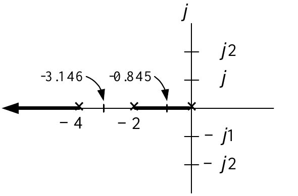
Only \(s=-0.845\) is on the real axis root locus and is therefore the only breakaway point.
(5) \(j\omega\) axis intercepts
Apply the Routh-Hurwitz test to \[s(s+2)(s+4)+K=s^{3}+6s^{2}+8s+K.\] The Routh table is\[\begin{array}{cccccc} s^{3} & & 1 & & 8 & \\ s^{2} & & 6 & & K & \\ s & & (48-K)/6 & & 0 & \\ 1 & & K & & & \end{array}\]
Stable for \(0<K<48.\)
Two right half-plane poles for \(K>48.\)
\(\Longrightarrow\) At \(K=48\) there are two poles on the \(j\omega\) axis.
To find these poles solve the auxiliary equation \(6s^{2}+48=0\) to obtain \(s=\pm j2\sqrt{2}=\pm j2.83.\)
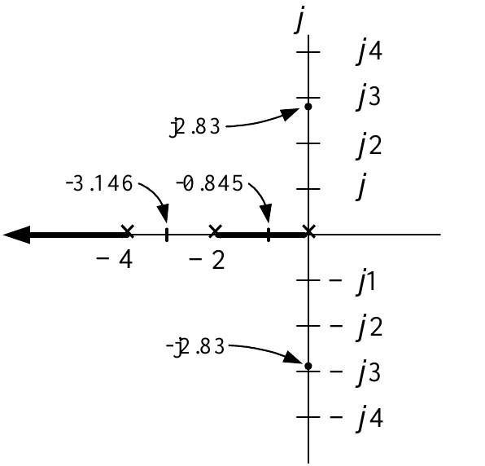
Using the above results we (Matlab!) can sketch the root locus as shown below.
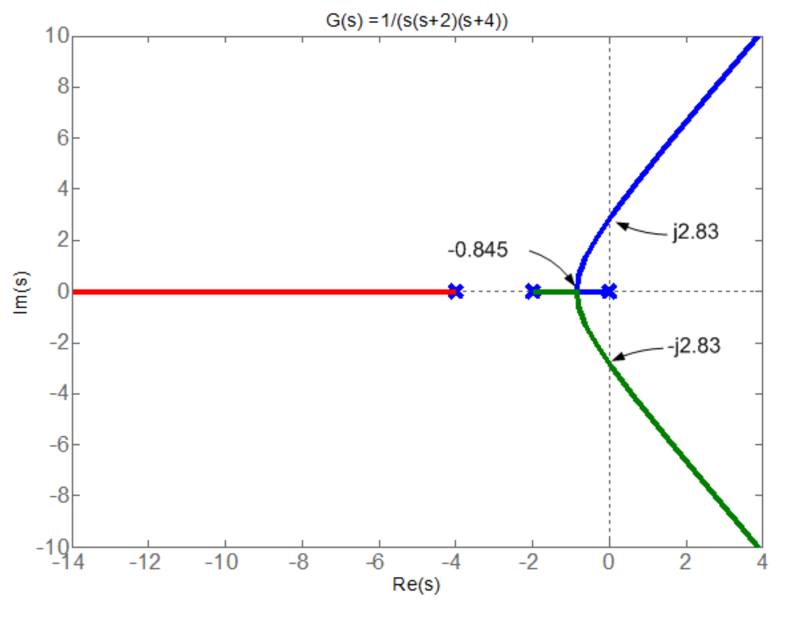
% Root Locus of G(s) = 1/(s(s+2)(s+4)) = 1/(s3+6s2+8s)
den = [1 6 8 0];
num = [1];
rlocus(tf(num,den))
% Pretty up the plot by making the linewidth thicker,
%`` ``the marker size and`` font size bigger.
h = findobj(gca, ’Type’, ’line’);
set(h, ’LineWidth’, 6)
set(h, ’MarkerSize’, 20)
set(gca,’FontSize’,24)
% Set range of x-axis [-10,0] and y-axis [-2,2]
v = [-10 10 -10 10];
axis(v)
axis square
% Title the plot and label the axes
str_G = ’G(s) = 1/(s(s+2)(s+4))’;
title(str_G,’FontSize’,20)
xlabel(’Re(s)’,’FontSize’,20)
ylabel (’Im(s)’,’FontSize’,20)
The previous examples used the following root locus rules.
(1) The root locus starts on the open-loop poles (\(K=0\)).
(2) The root locus ends on the open-loop zeros (\(K=\infty\)).
(3) The root locus is symmetric with respect to the real axis.
(4) Any \(s_{0}\) on the root locus satisfies the angle condition, i.e., \[\angle G(s_{0})=\pm(2\ell+1)\pi\text{ for }\ell=0,1,2,...\]
(used to find the real-axis root locus)
(5) A breakaway point from the real axis is a solution to \(dG(s)/ds=0.\)
(6) The \(j\omega\) axis intercepts may be found using the Routh-Hurwitz test.
\[\begin{aligned} G(s)=\frac{b(s)}{a(s)} & =\frac{b_{m}s^{m}+b_{m-1}s^{m-1}+\cdots +b_{1}s+b_{0}}{s^{n}+a_{n-1}s^{n-1}+\cdots+a_{1}s+a_{0}} \\ & =\frac{b_{m}\!\left( s^{m}+\dfrac{b_{m-1}}{b_{m}}s^{m-1}+\cdots +\dfrac{b_{1}}{b_{m}}s+\dfrac{b_{0}}{b_{m}}\right) }{s^{n}+a_{n-1}s^{n-1}+\cdots+a_{1}s+a_{0}}. \end{aligned}\]
For \(|s|\) large the branches of the root locus are asymptotic to straight lines.
These straight lines are called asymptotes.
These asymptotes intersect the real axis at angles given by \[\theta_{\ell}=\frac{2\ell+1}{n-m}\pi,\text{ }\ell=0,1,2,...,n-m-1.\]
Further these asymptotes intersect on the real line at \[\sigma_{1}=-\frac{a_{n-1}-b_{m-1}/b_{m}}{n-m}.\]
\[\begin{aligned} G(s)=\frac{b(s)}{a(s)} & =\frac{b_{m}s^{m}+b_{m-1}s^{m-1}+\cdots +b_{1}s+b_{0}}{s^{n}+a_{n-1}s^{n-1}+\cdots+a_{1}s+a_{0}} \\ & =\frac{b_{m}\!\left( s^{m}+\dfrac{b_{m-1}}{b_{m}}s^{m-1}+\cdots +\dfrac{b_{1}}{b_{m}}s+\dfrac{b_{0}}{b_{m}}\right) }{s^{n}+a_{n-1}s^{n-1}+\cdots+a_{1}s+a_{0}}. \end{aligned}\] In the special case where \(m=0,\) that is, \[G(s)=\frac{b_{0}}{s^{n}+a_{n-1}s^{n-1}+\cdots+a_{1}s+a_{0}}\] we take \(b_{-1}=0\) so that \[\sigma_{1}=-\frac{a_{n-1}-b_{-1}/b_{0}}{n-m}=-\frac{a_{n-1}-0}{n-m}.\]
This rule is best explained by an example.
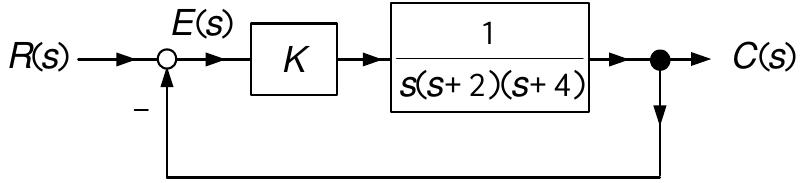
Then the angles of the asymptotes with respect to the real axis are (\(n=3,m=0\)) \[\begin{aligned} \theta_{\ell} & =\frac{(2\ell+1)\pi}{3-0},\ell=0,1,2 \\ & =\frac{\pi}{3},\frac{3\pi}{3},\frac{5\pi}{3} \\ & =\frac{\pi}{3},\pi,-\frac{\pi}{3} \end{aligned}\] and these asymptotes intersect at\[\begin{aligned} \sigma_{1} & =-\frac{a_{n-1}-0}{n-m},\text{ }n=3,m=0 \\ & =-\frac{6-0}{3-0},\text{ }a_{2}=6 \\ & =-2. \end{aligned}\]

\(\theta_{\ell}=\dfrac{\pi}{3},\pi,-\dfrac{\pi}{3}\) and \(\sigma_{1}=-2.\)
The asymptotes intersect the \(j\omega\) axis at \(\pm j2\tan(\pi/3)=\pm2\sqrt {3}=\pm j3.46.\)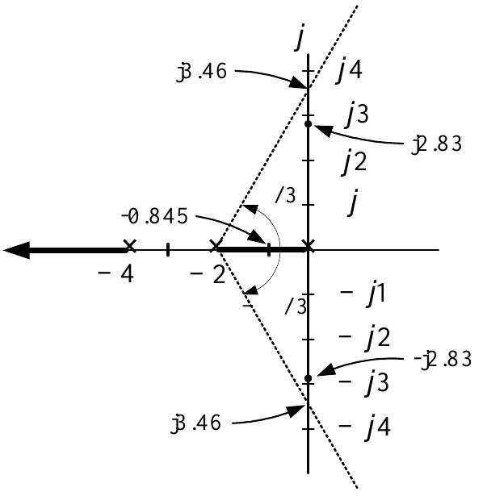
- Matlab plot of the root locus (See slide ).
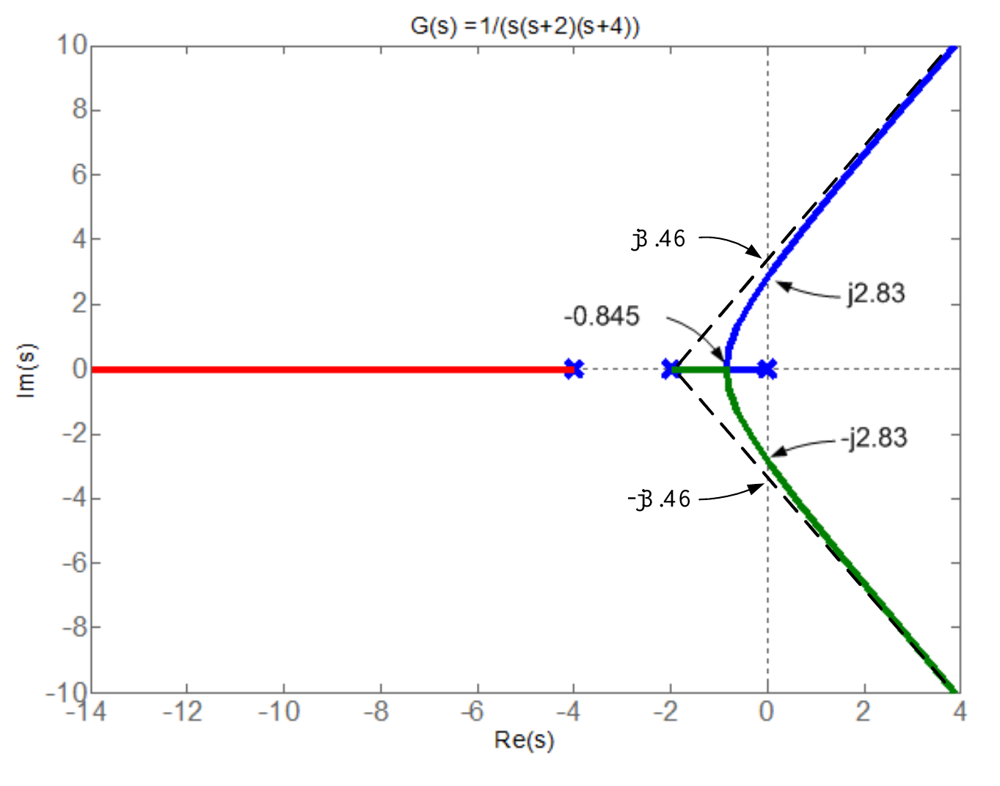
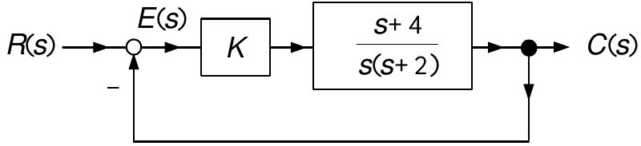
Return Difference
\[1+KG(s)=1+K\dfrac{s+4}{s(s+2)}=\dfrac{s(s+2)+K(s+4)}{s(s+2)}\] Angle Condition \(G(s)=-\dfrac{1}{K}\) \(\Longrightarrow\) \[\angle(s+4)-\angle s-\angle(s+2)=\pi(2\ell+1),\ell=0,\pm 1,\pm2,....\]
(1) \(K=0.\) Then \(s(s+2)+K(s+4)=s(s+2)=0\) \(\Longrightarrow\) \(\ s=0,-2.\)
(2) \(K=\infty.\) From \(G(s)=\dfrac{s+4}{s(s+2)}=-\dfrac{1}{K}\) \(\ \Longrightarrow\) \(s\rightarrow-4\) or \(|s|\rightarrow\infty\) as \(K\rightarrow\infty\).
\(G(s)\) has one zero at \(-4\) and one zero at \(|s|=\infty\).
The root locus ends on the open-loop zeros.

(3) Real Axis Root Locus
(i) Consider \(s\) real with \(-2<s<0\) so \(\angle s=\pi,\angle (s+2)=0,\angle(s+4)=0.\)
Then \[\angle G(s)=\angle(s+4)-\angle s-\angle(s+2)=-\pi.\]
These values of \(s\) are on the root locus.
(ii) Consider \(s\) real with \(-4<s<-2\) so \(\angle s=\pi,\angle (s+2)=\pi,\angle(s+4)=0.\)
Then \[\angle G(s)=\angle(s+4)-\angle s-\angle(s+2)=0.\]
These values of \(s\) are not on the root locus.
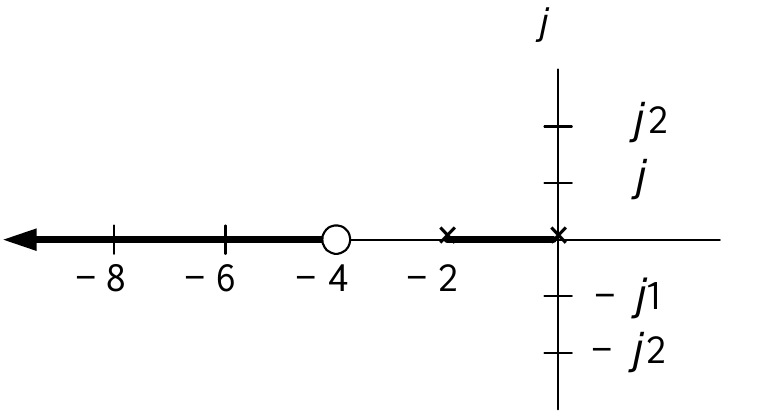
(3) Real Axis Root Locus (continued)
(iii) Consider \(s\) real with \(s<-4\) so \(\angle s=\pi,\angle (s+2)=\pi,\angle(s+4)=\pi.\)
Then \[\angle G(s)=\angle(s+4)-\angle s-\angle(s+2)=-\pi.\]
These values of \(s\) are on the root locus.
(iv) Finally, consider \(s\) real with \(s>0\) so \(\angle s=0,\angle (s+2)=0,\angle(s+4)=0.\)
Then \[\angle G(s)=-\angle s-\angle(s+2)-\angle(s+4)=0.\]
These values of \(s\) are not on the root locus.
Breakaway Point
Solve \[\frac{d}{ds}\underset{G(s)}{\underbrace{\left( \dfrac{s+4}{s(s+2)}\right) }}=0.\]
\[\frac{d}{ds}G(s)=\dfrac{1}{s(s+2)}-\dfrac{s+4}{\left[ s(s+2)\right] ^{2}}\frac{d}{ds}\left( s^{2}+2s\right) =\frac{s(s+2)-(s+4)(2s+2)}{\left[ s(s+2)\right] ^{2}}=-\frac{s^{2}+8s+8}{\left[ s(s+2)\right] ^{2}}\]
\(\dfrac{d}{ds}G(s)=0\) requires \(s^{2}+8s+8=0\), or \[s=\frac{-8\pm\sqrt{64-32}}{2}=-4\pm2\sqrt{2}=-6.828,-1.172\]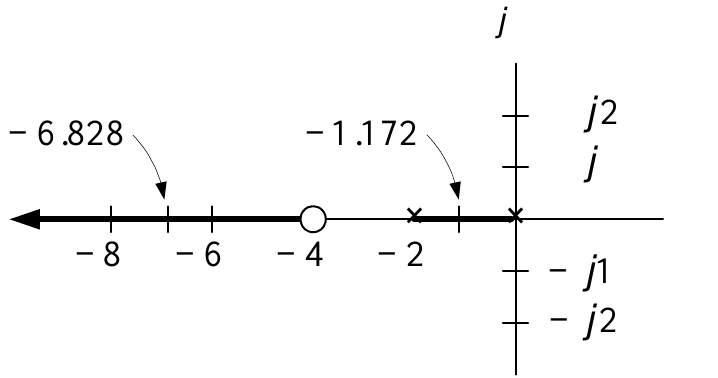
- Both roots of \(dG/ds=0\) are on the real axis root locus and so are breakaway pts.
\(j\omega\) axis intercepts\[1+K\dfrac{s+4}{s(s+2)}=\dfrac{s(s+2)+K(s+4)}{s(s+2)}=0\]
The closed-loop poles are the roots of \[s(s+2)+K(s+4)=s^{2}+(K+2)s+4K=0.\]
Are there values of \(K\geq0\) for which the roots are on the \(j\omega\) axis?
This is a second-order polynomial which is stable for \(K>-2.\)
\(\Longrightarrow\) There is no value of \(K\geq0\) for which the root locus intercepts the \(j\omega\) axis.
Asymptotes \(n=2,m=1\)
Asymptote angles: \[\begin{aligned} \theta_{\ell} & =\frac{\pi(2\ell+1)}{n-m},\text{ }\ell=0,1,...,n-m-1 \\ & =\frac{\pi(2\ell+1)}{2-1},\text{ }\ell=0. \end{aligned}\]
That is, \(\theta_{0}=\pi.\)
Asymptote intersection with the real axis \[\begin{aligned} \sigma_{1} & =-\frac{a_{n-1}-b_{m-1}/b_{m}}{n-m},\text{ }n=3,m=1 \\ & =-\frac{2-4/1}{2-1}\text{ as }a_{2}=2 \\ & =2. \end{aligned}\]
That is, \(\sigma_{1}=2.\)
- There is only one asymptote whose angle is \(\pi.\)
Sketch Previously
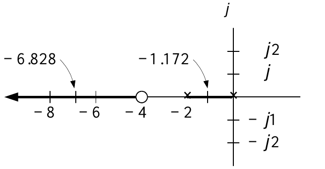
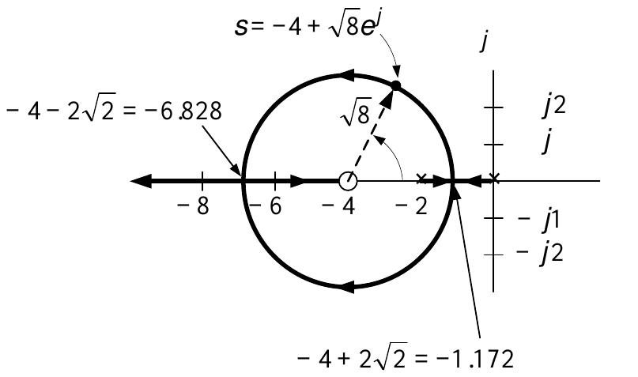
Using the angle condition we show that the root locus that is off the real axis is a circle!
Show \(s=-4+\sqrt{8}e^{j\theta}\) is on the root locus for \(0\leq\theta \leq2\pi.\) \[\begin{aligned} \left. G(s)\right\vert _{s=-4+\sqrt{8}e^{j\theta}}=\left. \dfrac {s+4}{s(s+2)}\right\vert _{s=-4+\sqrt{8}e^{j\theta}} & =\frac{\sqrt {8}e^{j\theta}}{(-4+\sqrt{8}e^{j\theta})(-2+\sqrt{8}e^{j\theta})} \\ & =\frac{\sqrt{8}e^{j\theta}}{8-6\sqrt{8}e^{j\theta}+8e^{2j\theta}} \\ & =\frac{\sqrt{8}}{8e^{-j\theta}-6\sqrt{8}+8e^{j\theta}} \\ & =\frac{\sqrt{8}}{16\cos(\theta)-6\sqrt{8}} \\ & =-\frac{\sqrt{8}}{\underset{16.97}{\underbrace{6\sqrt{8}}}-16\cos(\theta)}. \end{aligned}\] That is, \(G(-4+\sqrt{8}e^{j\theta})=-\) \(\underset{>\text{ }0\text{ for all }\theta}{\underbrace{\dfrac{\sqrt{8}}{16.97-16\cos(\theta)}}}\).
- \(\angle G(-4+\sqrt{8}e^{j\theta})=\pi\) for all \(0\leq\theta\leq2\pi\).
\(G(s)=\dfrac{1}{s(s^{2}+2s+2)}=\dfrac{|s+4|}{|s||s-(-1+j)||s-(-1-j)|}e^{-j\left( \angle s+\angle(s-(-1+j))+\angle s-(-1-j)\right) }.\)
The denominator \(G(s)\) factors as \(s(s^{2}+2s+2)=s[s-(-1+j)][s-(-1-j)].\)
The pair of complex conjugate open-loop poles leads to the angles of departure.
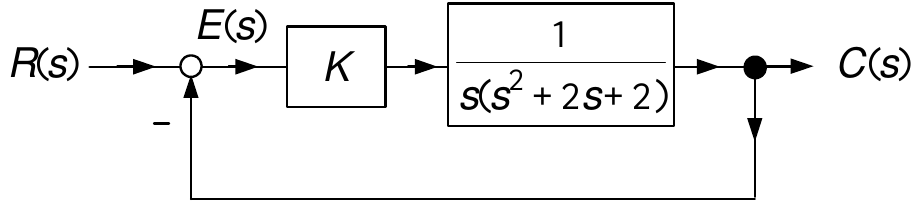
The closed-loop poles are the zeros of \[1+KG(s)=1+K\dfrac{1}{s(s^{2}+2s+2)}=\dfrac{s^{3}+2s^{2}+2s+K}{s(s^{2}+2s+2)}.\] By the angle condition CL poles satisfy \[G(s)=-\frac{1}{K}\text{ }\Longrightarrow\angle G(s)=\pi(2\ell+1),\ell =0,\pm1,\pm2,....\] or \[-\angle s-\angle\lbrack(s-(-1+j)]-\angle\lbrack s-(-1-j)]=\pi (2\ell+1),\ell=0,\pm1,\pm2,....\]
\(G(s)=\dfrac{1}{s(s^{2}+2s+2)}=\dfrac{|s+4|}{|s||s-(-1+j)||s-(-1-j)|}e^{-j\left( \angle s+\angle(s-(-1+j))+\angle s-(-1-j)\right) }\)
(1) \(K=0.\) Then \[s^{3}+2s^{2}+2s+K=s(s^{2}+2s+2)=s[s-(-1+j)][s-(-1-j)]=0\]
The root locus starts on the open-loop poles \(s=0,-1\pm j.\)
(2) \(K=\infty.\) From \(G(s)=\dfrac{1}{s(s^{2}+2s+2)}=-\dfrac{1}{K}\) we have \(|s|\rightarrow\infty\) as \(K\rightarrow\infty.\)
\(G(s)\) has three zeros at \(|s|=\infty\) since \[G(s)=\dfrac{1}{s(s^{2}+2s+2)}\approx\frac{1}{|s|^{3}}\text{ for }|s|\rightarrow\infty.\]
The root locus ends on the open-loop zeros.
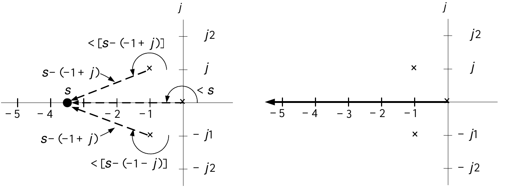
(i) \(s\) real with \(-\infty<s<0\) so \(\angle s=\pi,\angle \lbrack(s-(-1+j)]=-\angle\lbrack(s-(-1-j)]\). \[\angle G(s)=-\angle s\underset{0}{\underbrace{-\angle \lbrack(s-(-1+j)]-\angle\lbrack s-(-1-j)]}}\text{ }=-\angle s=-\pi\]
These values of \(s\) are on the root locus.
(ii) \(s\) real with \(s>0\) so \(\angle s=0,\angle\lbrack (s-(-1+j)]=-\angle\lbrack(s-(-1-j)].\) \[\angle G(s)=-\angle s\underset{0}{\underbrace{-\angle \lbrack(s-(-1+j)]-\angle\lbrack s-(-1-j)]}}\text{ }=-\angle s=0\]
These values of \(s\) are not on the root locus.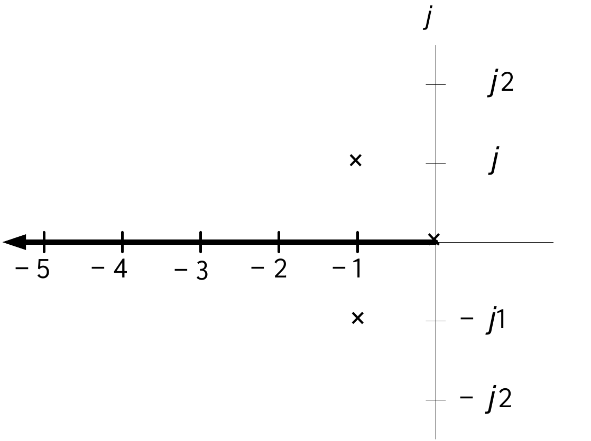
(4) Breakaway Point
Check where the return difference has multiple zeros. \[1+K\dfrac{1}{s(s^{2}+2s+2)}=\dfrac{s^{3}+2s^{2}+2s+K}{s(s^{2}+2s+2)}=0.\]
A breakaway point must satisfy \[\frac{d}{ds}\underset{G(s)}{\underbrace{\left( \dfrac{1}{s(s^{2}+2s+2)}\right) }}\text{ }=0\]
or \[\frac{d}{ds}G(s)=-\dfrac{1}{[s(s^{2}+2s+2)]^{2}}\frac{d}{ds}(s^{3}+2s^{2}+2s)=-\dfrac{1}{[s(s^{2}+2s+2)]^{2}}(3s^{2}+4s+2)=0.\]
Solving \(3s^{2}+4s+2=0\) gives \[s=\frac{-4\pm\sqrt{16-24}}{6}=-\frac{2}{3}-\pm j\frac{\sqrt{2}}{3}\]
These roots are not on the real axis. Thus there are no breakaway points.
(5) \(j\omega\) axis intercepts The Routh table for \(s^{3}+2s^{2}+2s+K=0\) is \[\begin{array}{cccccc} s^{3} & & 1 & & 2 & \\ s^{2} & & 2 & & K & \\ s & & (4-K)/2 & & 0 & \\ 1 & & K & & & \end{array}\]
Closed-loop system is stable for \(0<K<4.\)
There are two right half-plane roots for \(K>4.\)
\(\Longrightarrow\) For \(K=4\) there are two roots on the \(j\omega\) axis.
The auxiliary equation \(2s^{2}+K=2s^{2}+4=0\) then gives \(s=\pm j\sqrt {2}.\)
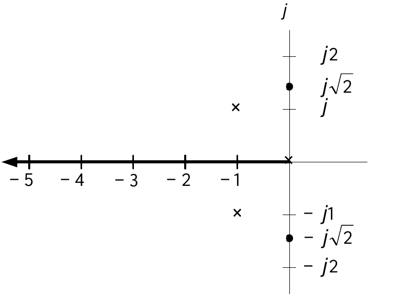
(6) Asymptotes The angles of the asymptotes are (\(n=3,m=0\)) \[\theta_{\ell}=\frac{\pi(2\ell+1)}{n-m},\text{ }\ell=0,1,...,n-m-1=\frac {\pi(2\ell+1)}{3-0},\text{ }\ell=0,1,2.\]
I.e., \(\theta_{0}=\pi/3,\theta_{1}=\pi,\theta_{2}=5\pi/3\) \((-\pi /3).\)
Their intercept on the real axis is\[\begin{aligned} \sigma_{1}=-\frac{a_{n-1}-b_{m-1}/b_{m}}{n-m},\text{ }n=3,m=0 & =-\frac {2-0}{3-0}\text{ as }a_{2}=2,b_{0}=1 \\ & =-2/3. \end{aligned}\]
Two of these asymptotes intersect the \(j\omega\) axis at \(\pm j(2/3)\tan (\pi/3)=\pm j1.155.\)
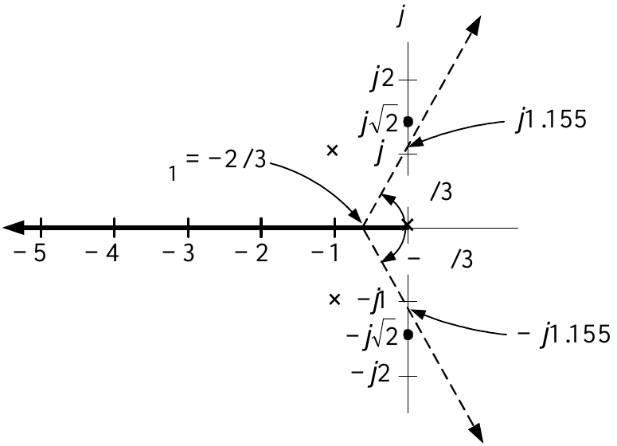
(7) Angles of Departure
For \(K=0\) the roots are at \(s=0,s=-1+j,\) and \(s=-1-j.\)
As \(K\) is increased slightly, the closed-loop poles will leave these roots.
The branch that starts at \(-1+j\) is slightly away from this point.
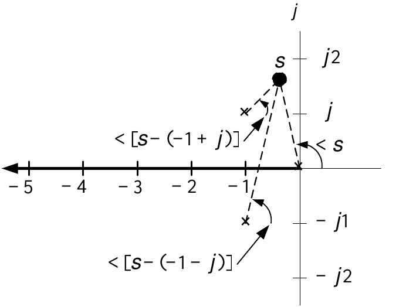
(7) Angles of Departure For \(K\) slightly positive we have\[\angle s\approx3\pi/4\text{ and }\angle\lbrack s-(-1-j)]\approx\pi/2.\]

For\(s\) close to \(-1+j\) and on the root locus it must satisfy the angle condition:\[-\angle s-\underset{\text{unknown}}{\underbrace{\angle\lbrack(s-(-1+j)]}}-\angle\lbrack s-(-1-j)]=\pi(2\ell+1),\ell=0,\pm1,\pm2,....\]
Or, with \(\ell=0\), we have \(-\pi/2-\angle\lbrack(s-(-1+j)]-3\pi/4=\pi\). \[\Longrightarrow\text{ }\angle\lbrack(s-(-1+j)]=-5\pi/4-\pi=-\pi/4-2\pi =-\pi/4\text{ }\operatorname{mod}2\pi.\]
By symmetry we have \(\angle\lbrack(s-(-1-j)]=\pi/4.\)
\(G(s)=\dfrac{1}{s(s^{2}+2s+2)}\)
The root locus starts on the open-loop poles.
The branch starting at \(s=0\) continues out along the negative real axis to \(-\infty.\)
The branch that starts at \(-1+j\) leaves that point at an angle of \(-\pi/4.\)
As \(K\) increases this branch intercepts the \(j\omega\) axis at \(j\sqrt{2}\).
As \(K\rightarrow\infty\) this branch approaches its asymptote.
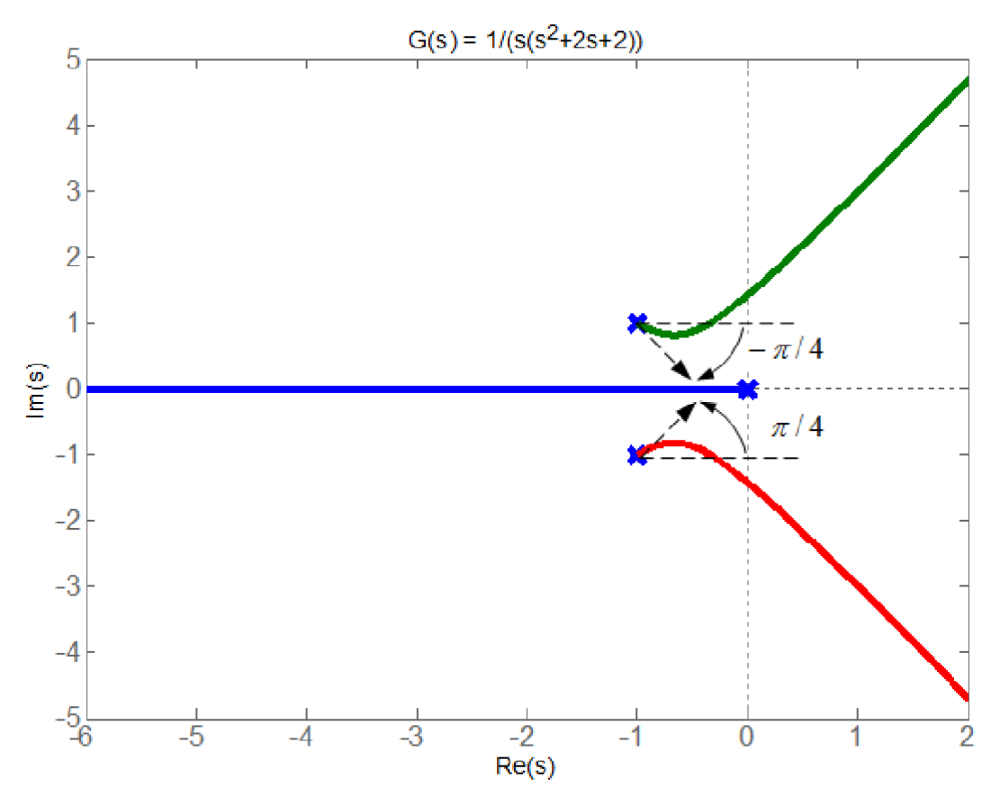
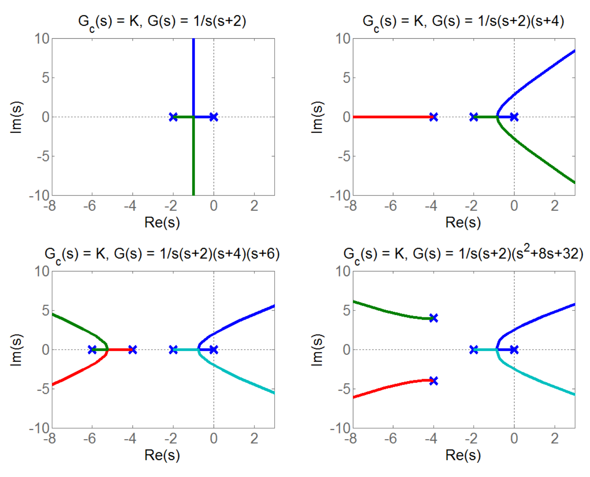
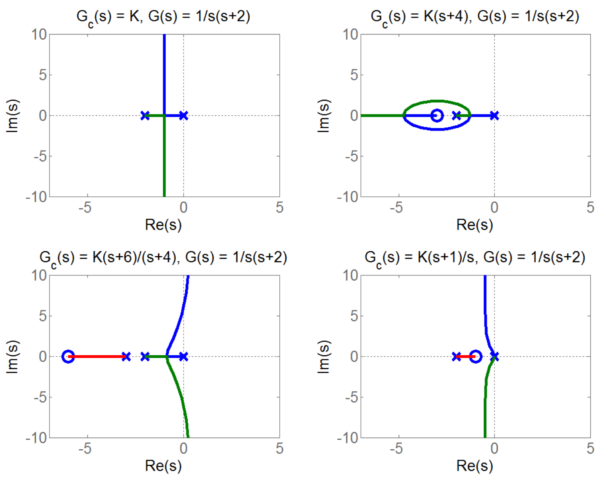
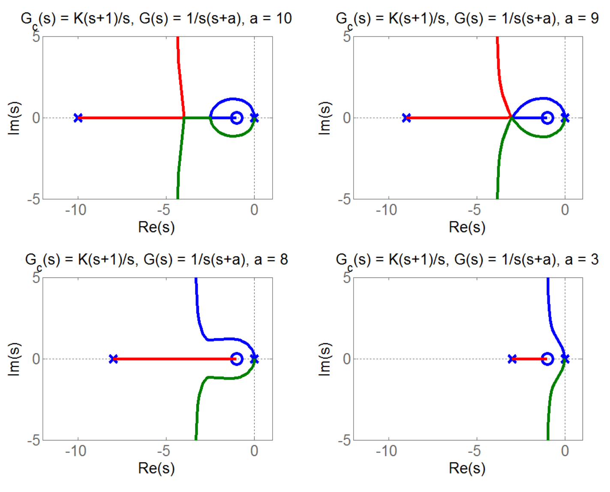
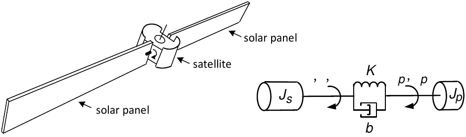
\[\begin{aligned} \theta(s) & =\frac{bs+K}{J_{s}s^{2}+bs+K}\theta_{p}(s)+\frac{1}{J_{s}s^{2}+bs+K}\tau(s) \\ \theta_{p}(s) & =\frac{bs+K}{J_{p}s^{2}+bs+K}\theta(s). \end{aligned}\]
Non collocated case: \(\theta_{p}\) is measured \[G_{p}(s)=\frac{\theta_{p}(s)}{\tau(s)}=\frac{(b/(J_{s}J_{p}))s+K/(J_{s}J_{p})}{s^{2}(s^{2}+b\left( 1/J_{p}+1/J_{s}\right) s+K\left( 1/J_{p}+1/J_{s}\right) )}.\] With \(J_{s}=5\) \(Kg-m^{2},\) \(J_{p}=1\) \(Kg-m^{2},\) \(K=0.15\) \(N-m/radian,\) \(b=0.05\) \(Nm/rad/sec,\) \(|\tau|\leq5,\) \[G_{p}(s)=\frac{0.01(s+3)}{s^{2}+0.06s+0.18}\frac{1}{s^{2}}.\]

Notch Filter \[G_{notch}(s)\triangleq\frac{s^{2}+0.06s+0.18}{(s+3)^{2}}.\] Then \[G_{notch}(s)G_{p}(s)\triangleq\frac{s^{2}+0.06s+0.18}{(s+3)^{2}}\frac{0.01(s+3)}{s^{2}+0.06s+0.18}\frac{1}{s^{2}}=\frac{0.01(s+3)}{(s+3)^{2}}\frac{1}{s^{2}}=\frac{0.01}{(s+3)s^{2}}.\]
\(G_{notch}(s)\) is used to cancel the two lightly-damped poles of \(G_{p}(s)\) at \(-0.03\pm j0.42\).
Replace them with two real poles at \(-3.\)
The location \(-3\) was chosen simply to cancel the zero of \(G_{p}(s).\)
\(G_{p}(s)\) is not known precisely so these stable pole-zero cancellations are not exact.
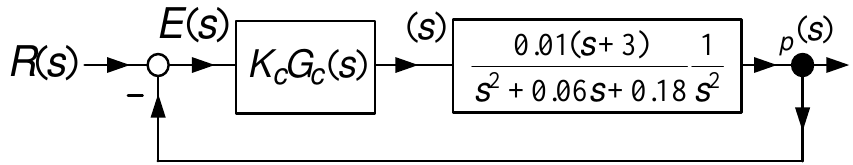
\[G_{notch}(s)G_{p}(s)\triangleq\frac{s^{2}+0.06s+0.18}{(s+3)^{2}}\frac{0.01(s+3)}{s^{2}+0.06s+0.18}\frac{1}{s^{2}}=\frac{0.01}{(s+3)s^{2}}.\]
A lead compensator of the form \(G_{lead}(s)=\dfrac{s+0.1}{s+1}\) stabilizes \(\dfrac{1}{s^{2}}.\)
Try this lead commpensator to stabilize \(G_{notch}(s)G_{p}(s)=\dfrac{0.01}{(s+3)s^{2}}.\)
The proposed controller is then \[G_{c}(s)=\dfrac{s+0.1}{s+1}\frac{s^{2}+0.06s+0.18}{(s+3)^{2}}.\]

\[G_{c}(s)=\dfrac{s+0.1}{s+1}\frac{s^{2}+0.06s+0.18}{(s+3)^{2}}.\]
First must deal with the fact that the cancellation is not exact.
Modify the notch filter to be \[G_{notch}(s)=\frac{s^{2}+g(0.06)s+g(0.18)}{(s+3.3)^{2}}.\]
Nominal value of \(g\) is \(1.\)
Put the poles of \(G_{notch}(s)\) at \(-3.3\) to be a little further in the left half-plane.
Consider \(g=0.8\) and \(g=1.2\) to see the effect of \(g.\)
Take \(g=0.8\) so \(G_{c}(s)=\dfrac{s+0.1}{s+1}\dfrac{s^{2}+0.048s+0.144}{(s+3.3)^{2}}.\)
Root locus of \(K_{c}G_{c}(s)G_{p}(s)\) for \(0\leq K_{c}\leq1500.\)
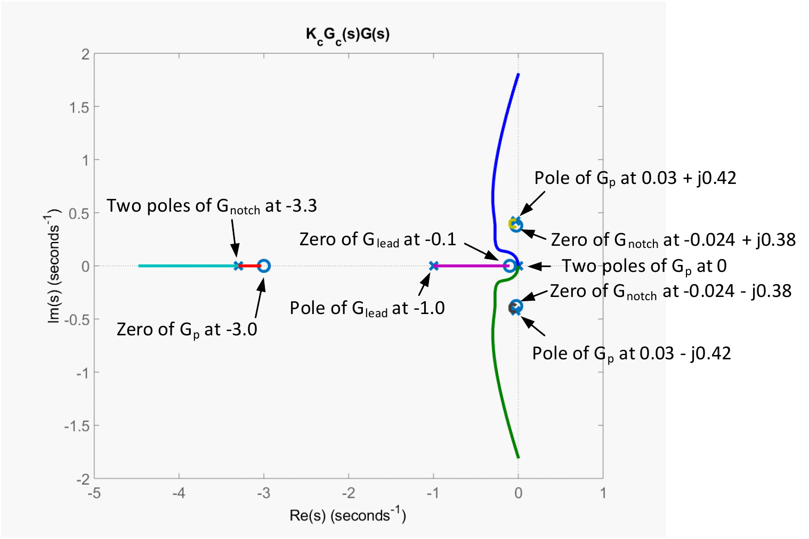
Take \(g=0.8\) so \(G_{c}(s)=\dfrac{s+0.1}{s+1}\dfrac{s^{2}+0.048s+0.144}{(s+3.3)^{2}}.\)
The 2 CL poles which start at \(-0.03\pm j0.42\) (OL poles of \(G_{p}(s)\)).
migrate to the zeros of the notch filter at \(-0.024+j0.38.\)
As \(K_{c}\) increases, they stay in the left half-plane.

With \(K_{c}=50\) and \(g=0.8\) the closed–loop poles are at \[3.46,-3.19,-0.82,-0.044\pm j0.43,-0.054\pm j0.1.\]
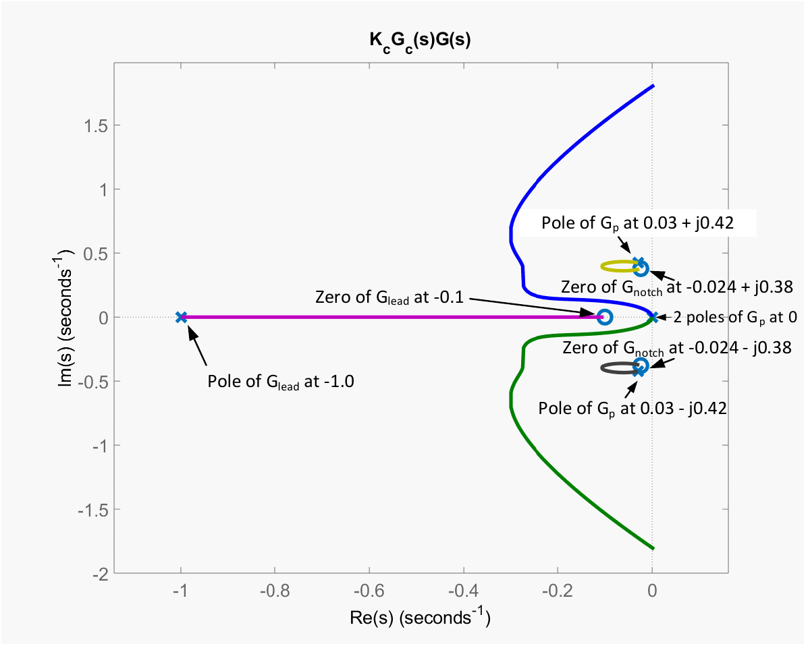
Redo root locus with \(g=1.2.\) \(G_{c}(s)=\dfrac{s+0.1}{s+1}\dfrac{s^{2}+0.072s+0.216}{(s+3.3)^{2}}.\)
The zeros of \(G_{notch}\) are now \(-0.036\pm j0.46.\)
The 2 CL poles which start at \(-0.03\pm j0.42\) (OL poles of \(G_{p}(s)\)).
migrate to the zeros of the notch filter at \(-0.036+j0.46.\)
As \(K_{c}\) increases two poles cross into the RHP!
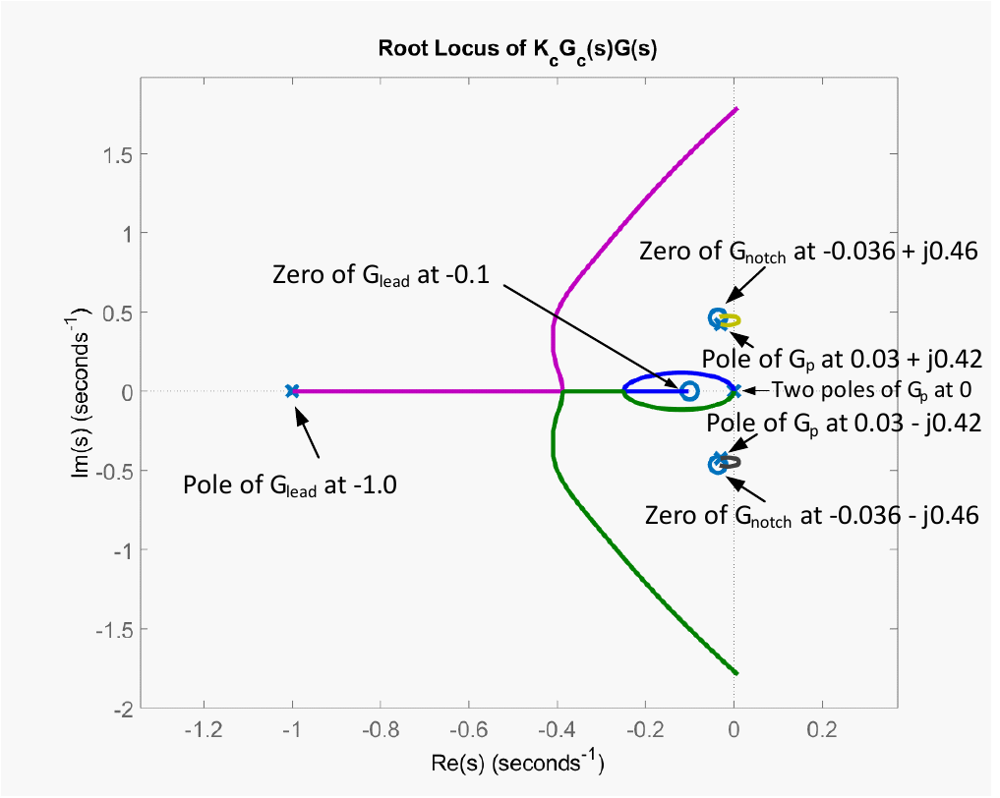
Set \(g=0.8,\) \(K_{c}=50.\)
CL poles at \(3.46,-3.19,-0.82,-0.044\pm j0.43,-0.054\pm j0.1.\)
Plot of \(\theta_{p}(t)\) and \(\theta(t)\) along with \(r(t)\).
The difference \(|\theta _{p}(t)-\theta (t)|\) is small and \(|\tau (t)|<0.1.\)
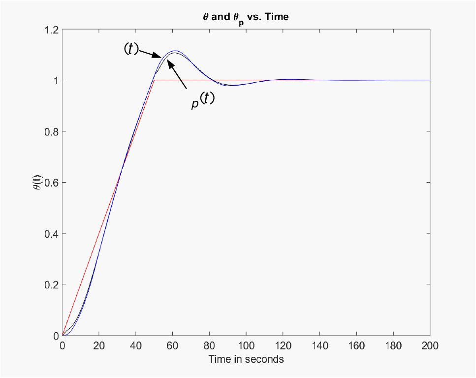

← Course Home · System Modeling and Control · Chapter 12